Fiecare bază de date Access constă din mai multe obiecte care vă permit să interacționați cu datele. Bazele de date pot include formulare pentru introducerea datelor, interogări pentru căutarea în ele, rapoarte pentru analizarea acestora și tabele pentru stocarea acestora. Ori de câte ori lucrați cu baza de date, lucrați cu multe dintre aceste obiecte simultan. Din fericire, Access face gestionarea acestor obiecte destul de simplă.
În această lecție, veți învăța cum să deschideți și să închideți baze de date, precum și cum să deschideți , să închideți și să salvați obiecte.
Pentru a deschide o bază de date existentă:Înainte de a introduce date sau de a modifica obiecte, va trebui să deschideți baza de date.
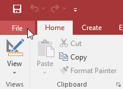
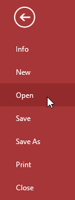
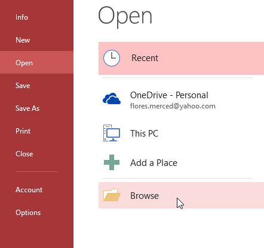
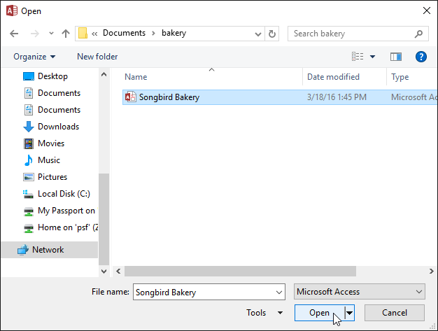
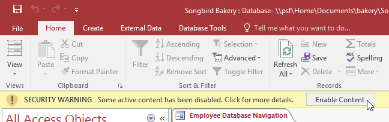
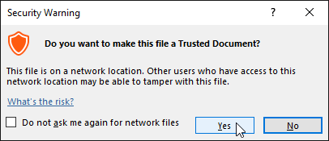
Este util să vă gândiți la baza de date ca la un liant sau un folder mare în care sunt stocate datele dvs. Datele în sine sunt conținute în obiectele bazei de date . Access tratează fiecare dintre aceste obiecte ca documente separate, ceea ce înseamnă că va trebui să le deschideți și să le salvați individual pentru a lucra cu ele.
Poate ați observat că această lecție nu conține instrucțiuni pentru salvarea unei baze de date. Acest lucru se datorează faptului că nu puteți salva o întreagă bază de date simultan. În schimb, trebuie să salvați individual obiectele conținute în baza de date.
Pentru a deschide un obiect: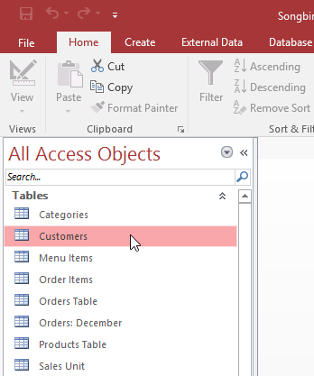
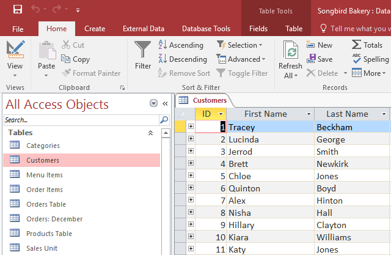
Va trebui să salvați orice modificări pe care le faceți fiecărui obiect înainte de a vă închide baza de date. Amintiți-vă, economisirea devreme și adesea poate preveni pierderea muncii dvs. Cu toate acestea, vi se va cere și să salvați orice lucrare nesalvată atunci când încercați să închideți baza de date.
Pentru a salva un obiect nou: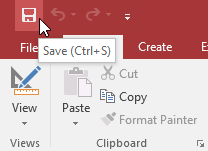
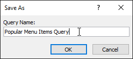
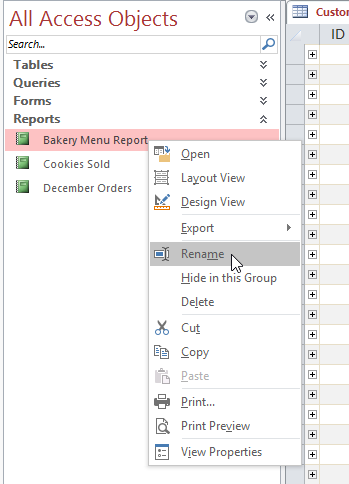
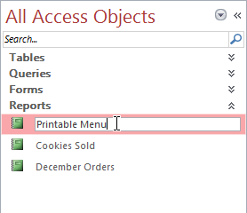